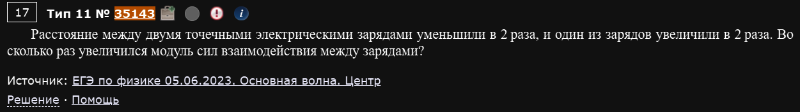
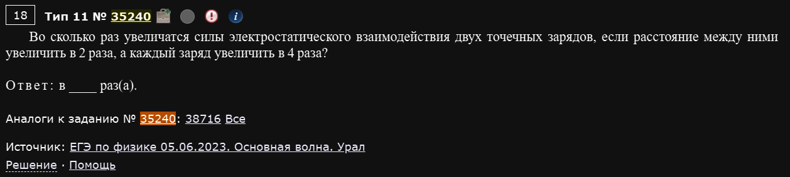
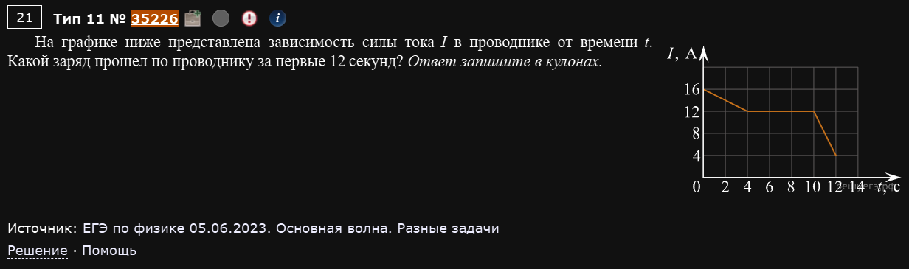
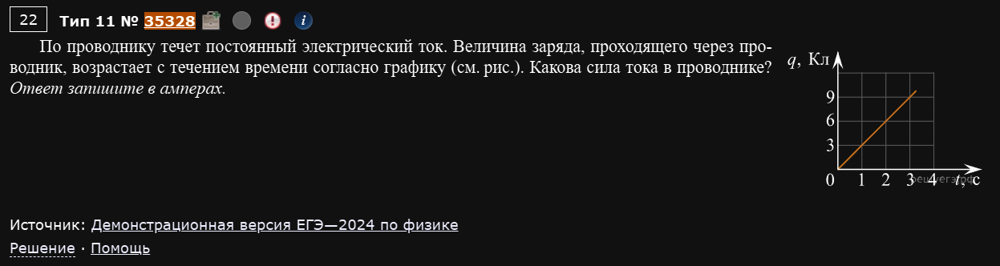
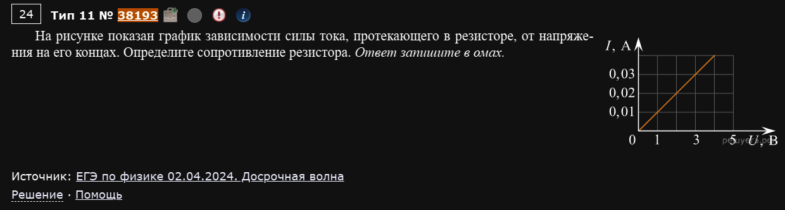
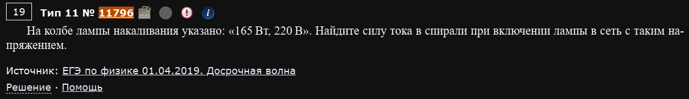
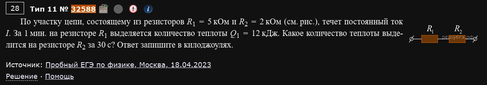
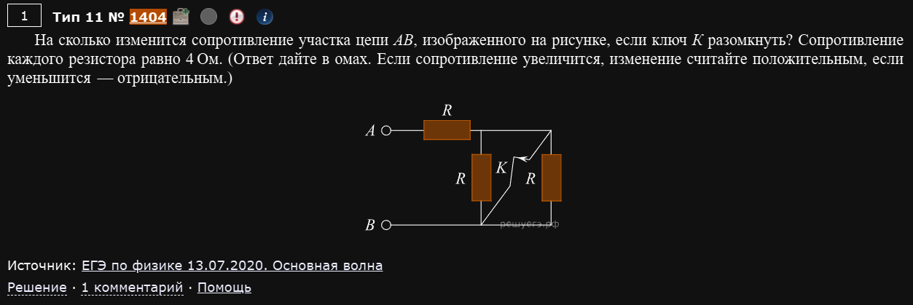
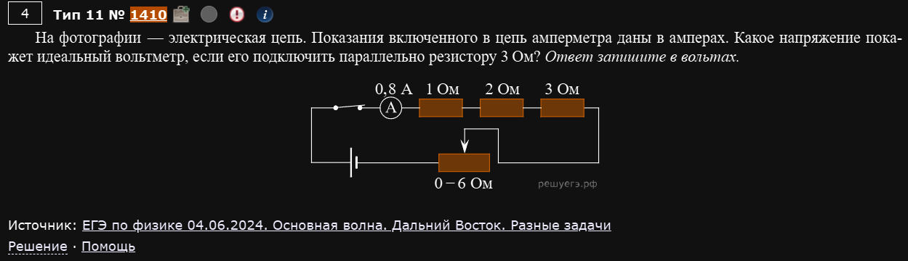
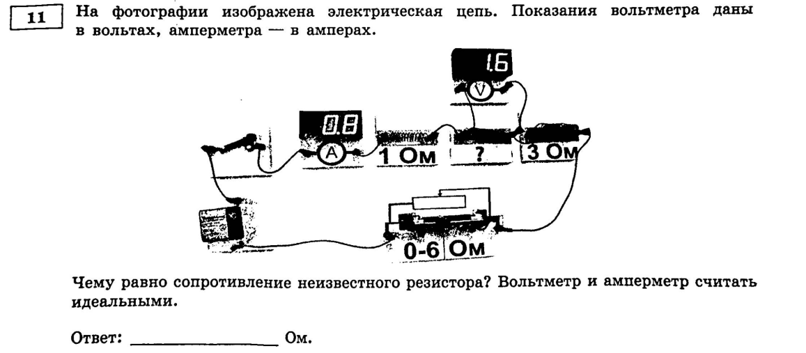

№11 Электрическое поле, законы постоянного тока
Разборы
№11. Электрическое поле. Законы постоянного тока
Четыре темы: закон Кулона, сила тока и закон Ома, работа/мощность тока (закон Джоуля-Ленца), и чтение реальных электрических схем. По формулам всё довольно прямолинейно — сложность обычно в том, чтобы правильно прочитать картинку (график, фотографию схемы) и не перепутать последовательное соединение с параллельным.
Закон Кулона
Пример 1) (Решу ЕГЭ №35143 — ЕГЭ по физике 05.06.2023, Центр)

Расстояние между двумя точечными электрическими зарядами уменьшили в 2 раза, и один из зарядов увеличили в 2 раза. Во сколько раз увеличился модуль сил взаимодействия между зарядами?
Заряд вырос в 2 раза — сила тоже растёт в 2 раза. Расстояние уменьшилось в 2 раза — а оно в знаменателе в квадрате, значит сила растёт ещё в раза. Итого:
Ответ: в 8 раз.
Пример 2) (Решу ЕГЭ №35240 — ЕГЭ по физике 05.06.2023, Урал)

Во сколько раз увеличатся силы электростатического взаимодействия двух точечных зарядов, если расстояние между ними увеличить в 2 раза, а каждый заряд увеличить в 4 раза?
Ответ: в 4 раза.
Считайте множители по отдельности
В таких задачах удобно не пытаться сразу представить итоговую формулу, а выписать отдельно, во сколько раз меняется каждый из трёх параметров (оба заряда и расстояние в квадрате), и просто перемножить эти коэффициенты — с учётом того, что расстояние сидит в знаменателе.
Сила тока и закон Ома
Пример 3) (Решу ЕГЭ №35226 — ЕГЭ по физике 05.06.2023, разные задачи)

На графике представлена зависимость силы тока I в проводнике от времени t: линия идёт от (0; 16 А) до (4; 12 А), затем держится на уровне 12 А до 10 с, а затем падает до (12; 4 А). Какой заряд прошёл по проводнику за первые 12 секунд?
Заряд — это площадь под графиком силы тока (по определению , значит ). Площадь под графиком. Фигура состоит из двух трапеций и прямоугольника:
Ответ: 144 Кл.
Пример 4) (Решу ЕГЭ №35328 — Демонстрационная версия ЕГЭ-2024)

По проводнику течёт постоянный электрический ток. Величина заряда, проходящего через проводник, возрастает с течением времени согласно графику (прямая линия). Какова сила тока в проводнике?
Обратная задача: теперь дан график заряда от времени, а сила тока — это как раз наклон (скорость изменения заряда):
По графику заряд растёт линейно — берём любые две удобные точки на прямой и делим разность зарядов на разность времени. Получаем А.
Ответ: 3 А.
Пример 5) (Решу ЕГЭ №38193 — ЕГЭ по физике 02.04.2024, досрочная волна)

На рисунке показан график зависимости силы тока, протекающего в резисторе, от напряжения на его концах (прямая через начало координат, при U=3 В сила тока I=0,03 А). Определите сопротивление резистора.
Прямая линия через начало координат в осях I-U — это и есть закон Ома, где сопротивление это просто обратная величина наклона:
Ответ: 100 Ом.
Работа тока, мощность, закон Джоуля-Ленца
Пример 6) (Решу ЕГЭ №11796 — ЕГЭ по физике 01.04.2019, досрочная волна)

На колбе лампы накаливания указано: «165 Вт, 220 В». Найдите силу тока в спирали при включении лампы в сеть с таким напряжением.
Паспортные данные лампы — это её номинальная мощность и напряжение, для которых работает обычная формула мощности:
Ответ: 0,75 А.
Пример 7) (Решу ЕГЭ №32588 — Пробный ЕГЭ по физике, Москва, 18.04.2023)

По участку цепи, состоящему из резисторов R1 = 5 кОм и R2 = 2 кОм (соединены последовательно), течёт постоянный ток I. За 1 минуту на резисторе R1 выделяется количество теплоты Q1 = 12 кДж. Какое количество теплоты выделится на резисторе R2 за 30 с?
При последовательном соединении через оба резистора течёт один и тот же ток, а теплота по закону Джоуля-Ленца — значит она пропорциональна произведению сопротивления на время:
Ответ: 2,4 кДж.
Не забывайте про время
Тут сразу два отличия между резисторами — разное сопротивление И разное время (60 с против 30 с). Легко забыть про второй множитель и просто пересчитать теплоту только через отношение сопротивлений — обязательно проверяйте оба условия задачи.
Электрические схемы
Пример 8) (Решу ЕГЭ №1404 — ЕГЭ по физике 13.07.2020, основная волна)

На рисунке изображён участок цепи АВ, где ключ K замкнут накоротко “вертикальные” резисторы (все резисторы одинаковы, по 4 Ом). Пока ключ замкнут, эти резисторы закорочены (ток идёт мимо них, через провод с нулевым сопротивлением), и вся схема — это просто один резистор R=4 Ом. На сколько изменится сопротивление участка АВ, если ключ K разомкнуть?
Когда ключ размыкают, “закороченные” резисторы перестают быть закороченными и включаются в схему: теперь это резистор R последовательно с двумя параллельно соединёнными резисторами R:
Ответ: увеличится на 2 Ом.
"Закороченный" — значит выключенный из работы
Точки, соединённые проводом с пренебрежимо малым сопротивлением, находятся под одним и тем же потенциалом — ток через резистор между такими точками просто не течёт, и его сопротивление можно “не замечать”, пока перемычка на месте. Как только перемычку (ключ) убирают — резистор “просыпается” и начинает влиять на общее сопротивление.
Пример 9) (Решу ЕГЭ №1410 — ЕГЭ по физике 04.06.2024, Дальний Восток)

На фотографии — электрическая цепь (резисторы соединены последовательно). Показания включённого в цепь амперметра — 0,8 А. Какое напряжение покажет идеальный вольтметр, если его подключить параллельно резистору 3 Ом?
Все резисторы последовательно — значит через каждый из них течёт тот же ток, что показывает амперметр:
Ответ: 2,4 В.
Пример 10) (Демидова 2026, вариант 14)

На фотографии изображена электрическая цепь. Показания вольтметра даны в вольтах, амперметра — в амперах. Схема: последовательно соединены амперметр (показывает 0,8 А), резистор 1 Ом, резистор с неизвестным сопротивлением (параллельно ему подключён вольтметр, показывающий 1,6 В), резистор 3 Ом, и регулируемый реостат 0-6 Ом. Чему равно сопротивление неизвестного резистора?
Это тот же самый снимок реальной лабораторной установки, что и в примере 9 (только там спрашивали про другой резистор) — резисторы включены последовательно, значит ток везде одинаковый и равен показанию амперметра.
Ответ: 2 Ом.
Одна фотография — разные вопросы
Обратите внимание: пример 9 и этот пример используют один и тот же снимок реальной схемы (1 Ом, неизвестный резистор, 3 Ом, реостат), только спрашивают о разных элементах. Это частый приём в этом номере — на Решу ЕГЭ и в Демидовой встречаются буквально одинаковые фотографии с разными формулировками вопроса. Не пугайтесь, если задача выглядит знакомой — просто внимательно перечитайте, что именно спрашивают в этот раз.